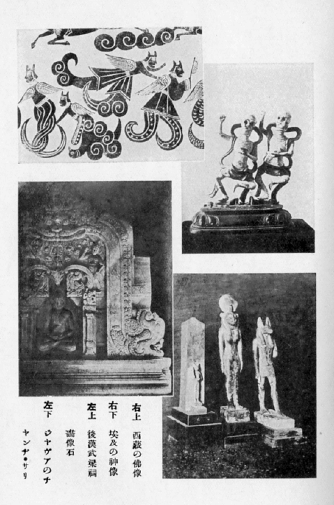

妖怪研究
伊東忠太
一 ばけものの起源
妖怪の
研究と
云つても、
別に
專門に
調べた
譯でもなく、
又さういふ
專門があるや
否やをも
知らぬ。
兎に
角私はばけものといふものは
非常に
面白いものだと
思つて
居るので、
之に
關するほんの
漠然たる
感想を、
聊か
茲に
述ぶるに
過ぎない。
私のばけものに
關する
考へは、
世間の
所謂化物とは
餘程範圍を
異にしてゐる。
先づばけものとはどういふものであるかといふに、
元來宗教的信念又は
迷信から
作り
出されたものであつて、
理想的又は
空想的に
或る
形象を
假想し、
之を
極端に
誇張する
結果勢ひ
異形の
相を
呈するので、
之が
私のばけものゝ
定義である。
即ち
私の
言ふばけものは、
餘程範圍の
廣い
解釋であつて、
世間の
所謂化物は一の
分科に
過ぎない
事となるのである。
世間で一
口［＃ルビの「くち」は底本では「くに」］に
化物といふと、
何か
妖怪變化の
魔物などを
意味するやうで
極めて
淺薄らしく
思はれるが、
私の
考へて
居るばけものは、
餘程深い
意味の
有るものである。
特に
藝術的に
觀察する
時は
非常に
面白い。
ばけものゝ一
面は
極めて
雄大で
全宇宙を
抱括する、
而も
他の一
面は
極めて
微妙で、
殆ど
微に
入り
細に
渉る。
即ち
最も
高遠なるは
神話となり、
最も
卑近なるはお
伽噺となり、一
般の
學術特に
歴史上に
於ても、
又一
般生活上に
於ても、
實に
微妙なる
關係を
有して
居るのである。
若し
歴史上又は
社會生活の
上からばけものといふものを
取去つたならば、
極めて
乾燥無味［＃「乾燥無味」は底本では「乾燦無味」］のものとなるであらう。
隨つて
吾々が
知らず
識らずばけものから
與へられる
趣味の
如何に
豊富なるかは、
想像に
餘りある
事であつて、
確［＃ルビの「たしか」は底本では「たかし」］にばけものは
社會生活の
上に、
最も
缺くべからざる
要素の一つである。
世界の
歴史風俗を
調べて
見るに、
何國、
何時代に
於ても、
化物思想の
無い
處は
決して
無いのである。
然らば
化物の
考へはどうして
出て
來たか、
之を
研究するのは
心理學の
領分であつて、
吾々は
門外漢であるが、
私の
考へでは「
自然界に
對する
人間の
觀察」これが
此根本であると
思ふ。
自然界の
現象を
見ると、
或［＃ルビの「あ」は底本では「ある」］るものは
非常に
美しく、
或るものは
非常に
恐ろしい。
或は
神祕的なものがあり、
或は
怪異なものがある。
之には
何か
其奧に
偉大な
力が
潜んで
居るに
相違ない。
此偉大な
現象を
起させるものは
人間以上の
者で
人間以上の
形をしたものだらう。
此想像が
宗教の
基となり、
化物を
創造するのである。
且又人間には
由來好奇心が
有る。
此好奇心に
刺戟せられて、
空想に
空想を
重ね、
遂に
珍無類の
形を
創造する。
故に
化物は
各時代、
各民族に
必ず
無くてならない
事になる。
隨つて
世界の
各國は
其民族の
差異に
應じて
化物が
異つて
居る。
二 各國のばけもの
ばけものが
國によりそれ／″＼
異なるのは、
各國民族の
先天性にもよるが、
又土地の
地理的關係によること
非常に
大である。
例へば
日本は
小島國であつて、
氣候温和、
山水も
概して
平凡で
別段高嶽峻嶺深山幽澤といふものもない。
凡てのものが
小規模である。その
我邦に
雄大な
化物のあらう
筈はない。
古來我邦の
化物思想は
甚だ
幼稚で、
或は
殆ど
無かつたと
言つて
可い
位だ。
日本の
神話は
化物の
傳説が
甚だ
少い。
日本の
神々は
日本の
祖先なる
人間であると
考へられて、
化物などとは
思はれて
居ない。それで
神々の
内で
別段異樣な
相をしたものはない。
猿田彦命が
鼻が
高いとか、
天鈿目命が
顏がをかしかつたといふ
位のものである。
又化物思想を
具體的に
現はした
繪も
餘り
多くはない。
記録に
現はれたものも
殆ど
無く、
弘仁年間に
藥師寺の
僧景戒が
著した「
日本靈異記」が
最も
古いものであらう。
今昔物語にも
往々化物談が
出て
居る。
日本の
化物は
後世になる
程面白くなつて
居るが、
是は
初め
日本の
地理的關係で
化物を
想像する
餘地がなかつた
爲である。
其後支那から、
道教の
妖怪思想が
入り、
佛教と
共に
印度思想も
入つて
來て、
日本の
化物は
此爲に
餘程豊富になつたのである。
例へば、
印度の三
眼の
明王は
變じて
通俗の三
眼入道となり、
鳥嘴の
迦樓羅王は
變じてお
伽噺の
烏天狗となつた。
又日本の
小説によく
現はれる
魔法遣ひが、
不思議な
藝を
演ずるのは
多くは、一
半は
佛教から一
半は
道教の
仙術から
出たものと
思はれる。
日本が
化物の
貧弱なのに
對して、
支那に
入ると
全く
異る、
支那はあの
通り
尨大な
國であつて、
西には
崑崙雪山の
諸峰が
際涯なく
連り、あの
深い
山岳の
奧には
屹度何か
怖しいものが
潛んでゐるに
相違ないと
考へた。
北にはゴビの
大沙漠があつて、これにも
何か
怪物が
居るだらうと
考へた。
彼等はゴビの
沙漠から
來る
風は
惡魔の
吐息だと
考へたのであらう。
斯くて
支那には
昔から
化物思想が
非常に
發達し
中には
極めて
雄大なものがある。
尤も
儒教の
方では
孔子も
怪力亂神を
語らず、
鬼神妖怪を
説かないが
道教の
方では
盛に
之を
唱道するのである。

形に
現はされたもので、
最も
古いと
思はれるものは
山東省の
武氏祠の
浮彫や
毛彫のやうな
繪で、
是は
後漢時代のものであるが、
其化物は
何れも
奇々怪々を
極めたものである。
山海經を
見ても
極めて
荒唐無稽なものが
多い。
小説では
西遊記などにも、
到る
處痛烈なる
化物思想が
横溢して
居る。
歴史で
見ても
最初から
出て
來る
伏羲氏が
蛇身人首であつて、
神農氏が
人身牛首である。
恁ういふ
風に
支那人は
太古から
化物を
想像する
力が
非常に
強かつた。
是皆國土の
關係による
事と
思はれる。
更に
印度に
行くと、
印度は
殆ど
化物の
本場である。
印度の
地形も
支那と
同じく
極めて
廣漠たるもので、
其千
里の
藪があるといふ
如き、
必ずしも
無稽の
言ではない。
天地開闢以來未だ
斧鉞の
入らざる
大森林、
到る
處に
蓊鬱として
居る。
印度河、
恒河の
濁流は
澎洋として
果も
知らず、
此偉大なる
大自然の
内には、
何か
非常に
恐るべきものが
潛んで
居ると
考へさせる。
實際又熱帶國には
不思議な
動物も
居れば、
不思議な
植物もある。
之を
少し
形を
變へると
直ぐ
化物になる。
印度は
實に
化物の
本場であつて、
神聖なる
史詩ラーマーヤナ
等には
化物が
澤山出て
來る。
印度教に
出て
來るものは、
何れも
不思議千
萬なものばかり、三
面六
臂とか
顏や
手足の
無數なものとか、
半人半獸、
半人半鳥などの
類が
澤山ある。
佛教の五
大明王等も
印度教から
來て
居る。
印度から
西へ
行くと、ペルシヤが
非常に
盛である。ペルシヤには
例の
有名なルステムの
化物退治の
神話があり、アラビヤには
例の
有名なアラビヤンナイトがある。
埃及もさうである。
洋々たるナイル
河、
荒漠たるサハラの
沙漠、
是等は
大に
化物思想の
發達を
促した。
埃及の
神樣には
化物が
澤山ある。
併し
之が
希臘へ
行くと
餘程異り、
却［＃ルビの「かへ」は底本では「かへつ」］つて
日本と
似て
來る。これ
山川風土氣候等、
地理的關係の
然らしむる
所であつて、
凡てのものは
小じんまりとして
居り、
隨つて
化物も
皆小規模である。
希臘の
神は
皆人間で
僅にお
化はあるが、
怖くないお
化である。
夫は
深刻な
印度の
化物とは
比べものにならぬ。
例へば、ケンタウルといふ
惡神は
下半身は
馬で、
上半身は
人間である。
又ギカントスは
兩脚が
蛇で
上半身は
人間、サチルスは
兩脚は
羊で
上半が
人間である。
凡そ
眞の
化物といふものは、
何處の
部分を
切り
離しても、一
種異樣な
形相で、
全體としては
渾然一
種の
纏まつた
形を
成したものでなければならない。
然るに
希臘の
化物の
多くは
斯の
如く
繼合せ
物である。
故に
眞の
化物と
言ふことは
出來ないのである。
然らば
北歐羅巴の
方面はどうかと
見遣るに、
此方面に
就ては
私は
餘り
多く
知らぬが、
要するに
幼稚極まるものであつて、
規模が
極めて
小さいやうである。つまり
歐羅巴の
化物は、
多くは
東洋思想の
感化を
受けたものであるかと
思ふ。
以上述べた
所を
總括して、
化物思想はどういふ
所に
最も
多く
發達したかと
考へて
見るに、
化物の
本場は
是非熱帶でなければならぬ
事が
分る。
熱帶地方の
自然界は
極めて
雄大であるから、
思想も
自然に
深刻になるものである。そして
熱帶で
多神教を
信ずる
國に
於て、
最も
深刻な
化物思想が
發達したといふ
事が
言へる。
縱令熱帶でなくとも、
多神教國には
化物が
發達した。
例へば
西藏の
如き、
其喇嘛教は
非常に
妖怪的な
宗教である。
斯樣にして
印度、
亞刺比亞、
波斯から、
東は
日本まで、
西は
歐羅巴までの
化物を
總括して
見ると、
化物の
策源地は
亞細亞の
南方であることが
分るのである。
尚化物に一の
必要條件は、
文化の
程度と
非常に
密接の
關係を
有する
事である。
化物を
想像する
事は
理にあらずして
情である。
理に
走ると
化物は
發達しない。
縱令化物が
出ても、
其は
理性的な
乾燥無味なものであつて、
情的な
餘韻を
含んで
居ない。
隨つて
少しも
面白味が
無い。
故に
文運が
發達して
來ると、
自然化物は
無くなつて
來る。
文化が
發達して
來れば、
自然何處か
漠然として
稚氣を
帶びて
居るやうな
面白い
化物思想などを
容れる
餘地が
無くなつて
來るのである。
三 化物の分類
以上で
大體化物の
概論を
述べたのであるが、
之を
分類して
見るとどうなるか。
之は
甚だ六ヶしい
問題であつて、
見方により
各異る
譯である。
先づ
差當り
種類の
上からの
分類を
述べると、
（一）
神佛（
正體、
權化）
（二）
幽靈（
生靈、
死靈）
（三）
化物（
惡戲の
爲、
復仇の
爲） （四）
精靈 （五）
怪動物
の五となる。
（一）の
神佛はまともの
物もあるが、
異形のものも
多い。そして
神佛は
往々種々に
變相するから
之を
分つて
正體、
權化の二とすることが
出來る。
化物的神佛の
實例は、
印度、
支那、
埃及方面に
極めて
多い。
釋迦が
［＃「釋迦が」は底本では「釋迦か」］既にお
化けである。卅二
相を
其儘現はしたら
恐ろしい
化物が
出來るに
違ひない。
印度教のシヴアも
隨分恐［＃ルビの「おそろ」は底本では「おそ」］しい
神である。
之が
權化して千
種萬樣の
變化を
試みる。ガネーシヤ
即ち
聖天樣は
人身象頭で、
惡神の
魔羅は
隨分思ひ
切つた
不可思議な
相貌の
者ばかりである。
埃及のスフインクスは
獅身人頭である。
埃及には
頭が
鳥だの
獸だの
色々の
化物があるが
皆此内である。
此（一）に
屬するものは
概して
神祕的で
尊い。
化物の
分類の
中、
第二の
幽靈は、
主として
人間の
靈魂であつて
之を
生靈死靈の二つに
分ける。
生［＃ルビの「い」は底本では「き」］きながら
魂が
形を
現はすのが
生靈で、
源氏物語葵の
卷の六
條御息所の
生靈の
如きは
即ち
夫である。
日高川の
清姫などは、
生きながら
蛇になつたといふから、
之も
此部類に
入れても
宜い。
死靈は、
死後に
魂が
異形の
姿を
現はすもので、
例が
非常に
多い。
其現はれ
方は
皆目的に
依つて
異なる。
其目的は
凡そ三つに
分つことが
出來る。一は
怨を
報ずる
爲で一
番怖い。二は
恩愛の
爲で
寧ろいぢらしい。三は
述懷的である。一の
例は
數ふるに
遑がない。二では
謠の「
善知鳥」など、三では「
阿漕」、「
鵜飼」など
其適例である。
幽靈は
概して
全體の
性質が
陰氣で、
凄いものである。
相貌なども
人間と
大差はない。
第三の
化物は
本體が
動物で、
其目的によつて
惡戯の
爲と、
復仇の
爲とに
分つ、
惡戯の
方は
如何にも
無邪氣で、
狐、
狸の
惡戯は
何時でも
人の
笑ひの
種となり、
如何にも
陽氣で
滑稽的である。
大入道、一つ
目小僧などはそれである。
併し
復仇の
方は
鍋島の
猫騷動のやうに
隨分しつこい。
第四の
精靈は、
本體が
自然物である。
此精靈の
最も
神聖なるものは、
第一の
神佛の
部に
入る。
例へば
日本國土の
魂は
大國魂命となつて
神になつてゐる
如きである。
物に
魂があるとの
想像は
昔からあるので、
大は
山岳河海より、
小は一
本の
草、一
朶の
花にも
皆魂ありと
想像した。
即ち「
墨染櫻」の
櫻「三十三
間堂」の
柳、など
其例で、
此等は
少しも
怖くなく、
極めて
優美なものである。
第五の
怪動物は、
人間の
想像で
捏造したもので、
日本の
鵺、
希臘のキミーラ
及グリフイン
等之に
屬する。
龍麒麟等も
此中に
入るものと
思ふ。
天狗は
印度では
鳥としてあるから、
矢張此中に
入る。
此第五に
屬するものは
概して
面白いものと
言ふことが
出來る。
以上を
概括して
其特質を
擧げると、
神佛は
尊いもの、
幽靈は
凄いもの、
化物は
可笑しなもの、
精靈は
寧ろ
美しいもの、
怪動物は
面白いものと
言ひ
得る。
四 化物の表現
此等樣々の
化物思想を
具體化するのにどういふ
方法を
以てして
居るかといふに、
時により、
國によつて
各々異なつてゐて、一
概に
斷定する
事は
出來ない。
例へば
天狗にしても、
印度、
支那、
日本皆其現はし
方が
異なつて
居る。
龍なども、
西洋のドラゴンと、
印度のナーガーと、
支那の
龍とは
非常に
現し
方が
違ふ。
併し
凡てに
共通した
手法の
方針は、
由來化物の
形態には
何等か
不自然な
箇所がある。それを
藝術の
方で
自然に
化さうとするのが
大體の
方針らしい。
例へば六
臂の
觀音は
元々大化物である、
併し
其澤山の
手の
出し
方の
工夫によつて、
其手の
工合が
可笑しくなく、
却つて
尊く
見える。
決して
滑稽に
見えるやうな
下手なことはしない。
此處に
藝術の
偉大な
力がある。
此偉大な
力を
分解して
見ると。一
方には
非常な
誇張と、一
方には
非常な
省略がある。で、これより
各論に
入つて
化物の
表現即ち
形式を
論ずる
順序であるか、
今は
其暇がない。
若し
化物學といふ
學問がありとすれば、
今まで
述べた
事は、
其序論と
見るべきものであつて、
茲には
只序論だけを
述べた
事になるのである。
要するに、
化物の
形式は
西洋は一
體に
幼稚である。
希臘や
埃及は
多く
人間と
動物の
繼合せをやつて
居る
事は
前に
述べたが、それでは
形は
巧に
出來ても
所謂完全な
化物とは
云へない。ローマネスク、ゴシツク
時代になると、
餘程進歩して一の
纏まつたものが
出來て
來た。
例へば
巴里のノートルダムの
寺塔の
有名な
怪物は
繼合物ではなくて
立派に
纏まつた
創作になつて
居る。ルネツサンス
以後は
論ずるに
足らない。
然るに
東洋方面、
特に
印度などは
凡てが
渾然たる
立派な
創作である。
日本では
餘り
發達して
居なかつたが、
今後發達させようと
思へば
餘地は
充分ある。
日本は
今藝術上の
革命期に
際して、
思想界が
非常に
興奮して
居る。
古今東西の
思想を
綜合して
何物か
新しい
物を
作らうとして
居る。
此機會に
際して
化物の
研究を
起し、
化物學といふ一
科の
學問を
作り
出したならば、
定めし
面白からうと
思ふのである。
昔の
傳説、
樣式を
離れた
新化物の
研究を
試みる
餘地は
屹度あるに
相違ない。（完）
（大正六年「日本美術」）
●表記について
- このファイルは W3C 勧告 XHTML1.1 にそった形式で作成されています。
- ［＃…］は、入力者による注を表す記号です。
- 「くの字点」は「／＼」で、「濁点付きくの字点」は「／″＼」で表しました。